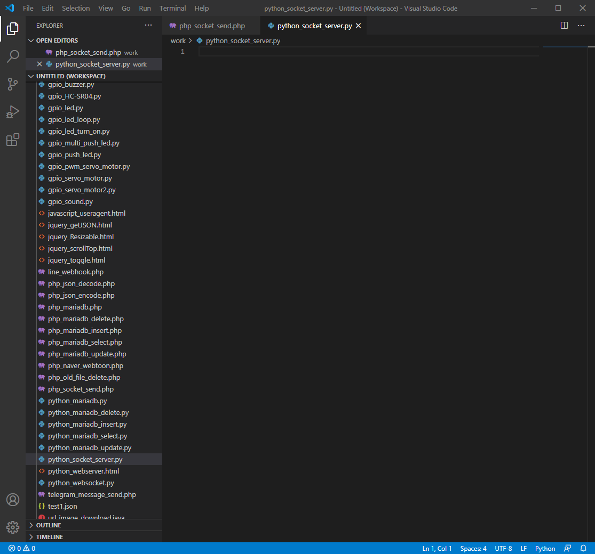
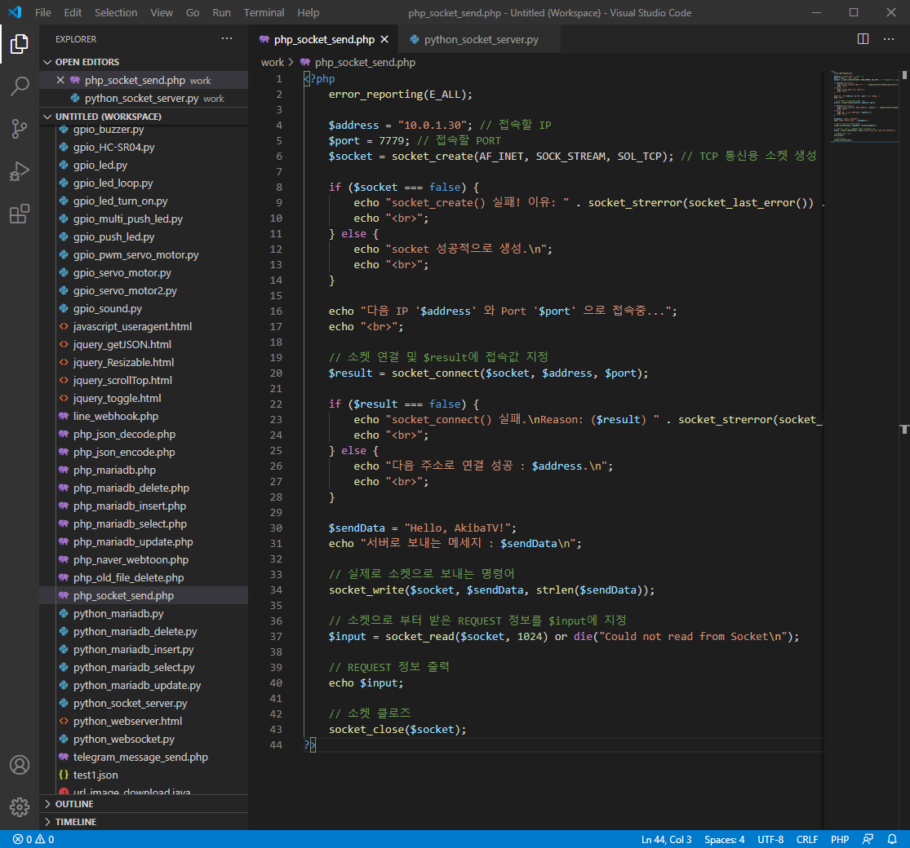
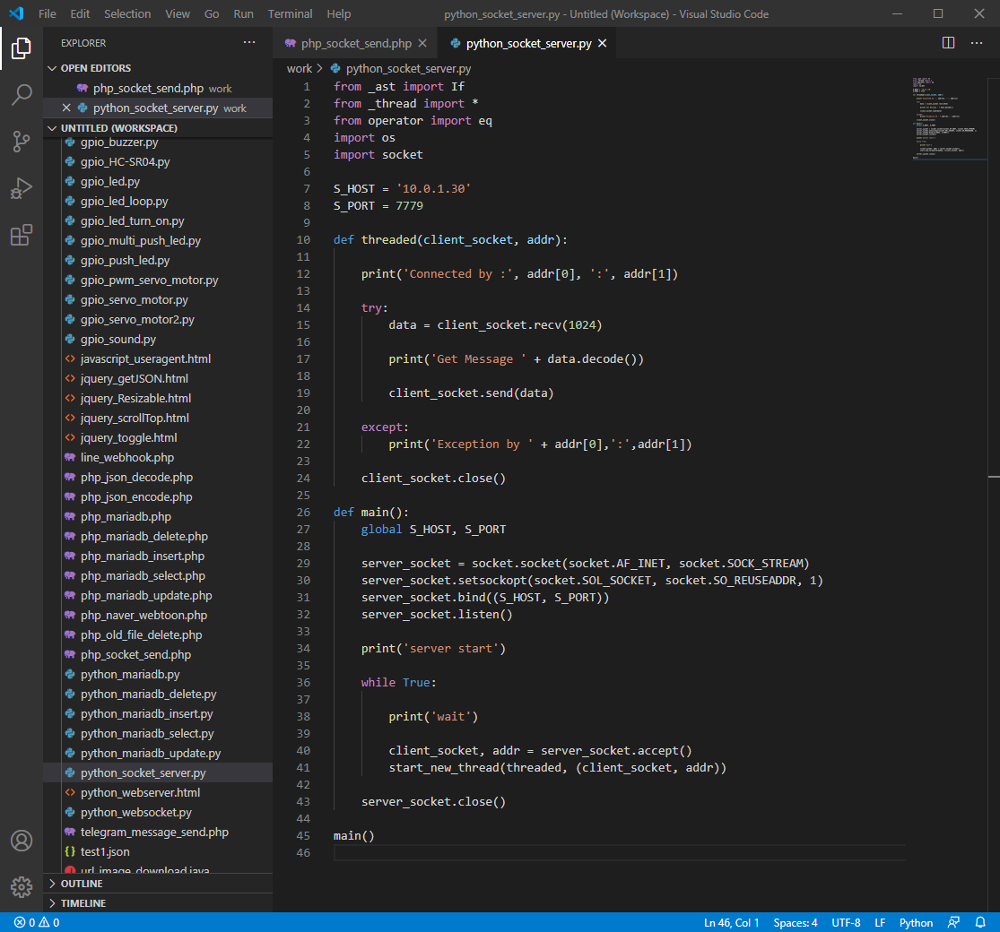
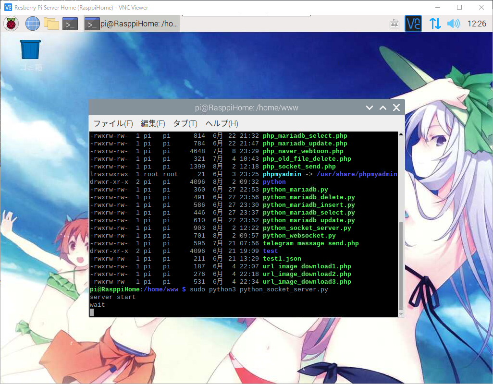
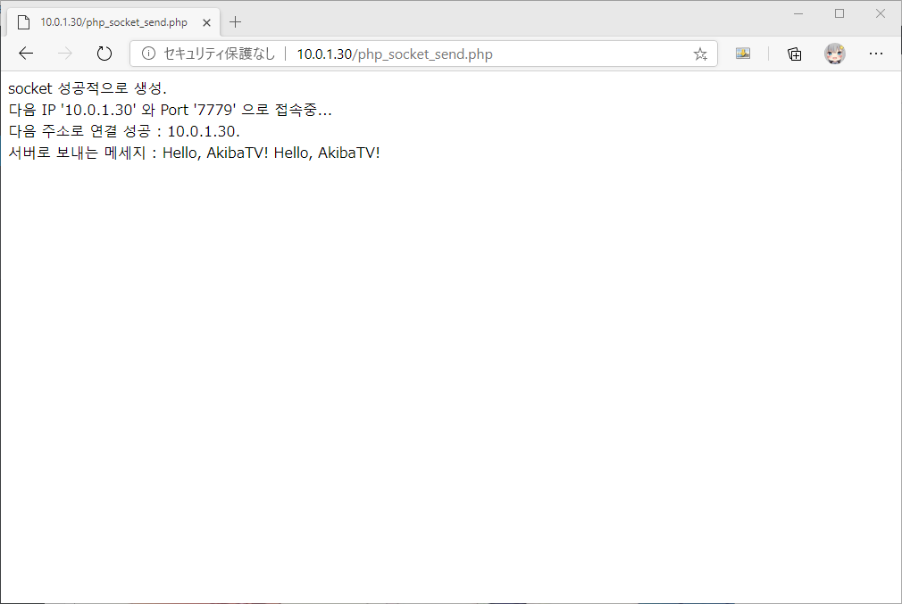
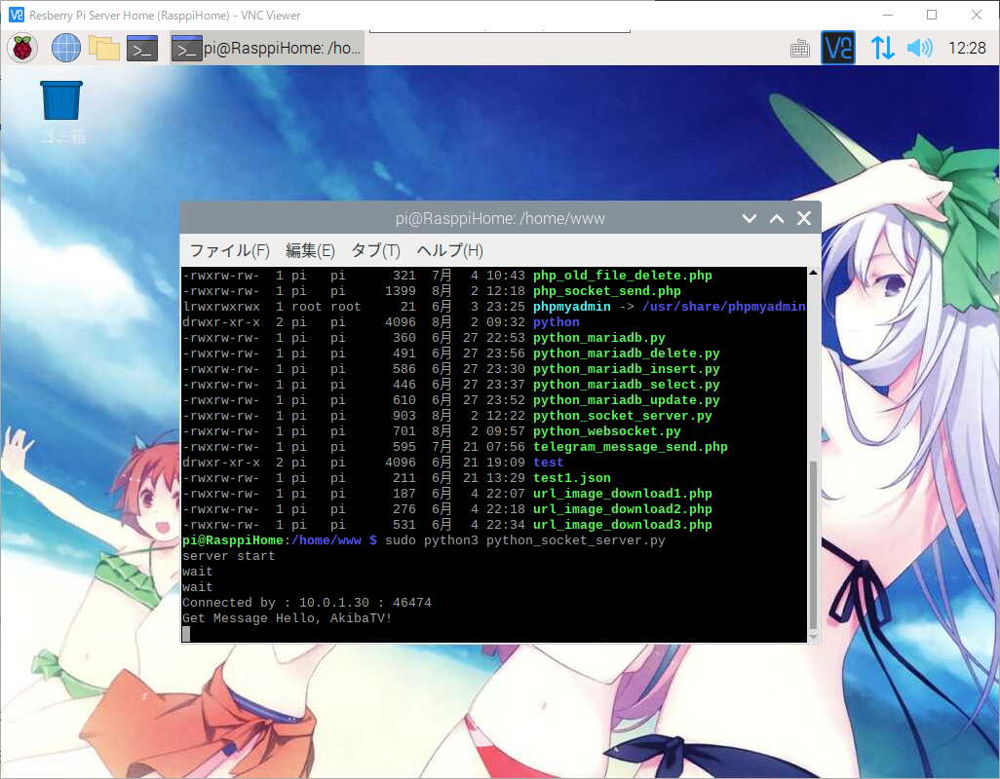

라즈베리파이에서 파이썬을 이용해서 Socket통신 해보기
안녕하세요. AkibaTV입니다.
이번에 소개할 내용은 라즈베리파이에서 파이썬을 이용해서 Socket통신 해보기 입니다.
파이썬을 이용해서 간단하게 소켓 서버를 구축하고
PHP를 이용한 클라이언트를 제작후 웹에서 파이썬 서버로 데이터를 주고 받는것을 해보도록 하겠습니다.
그럼 우선 Visual Studio Code(비주얼 스튜디오 코드)를 실행해 주시기 바랍니다.
실행을 하셨으면 아래의 파일들을 추가를 해주시기 바랍니다.
1
2
| php_socket_send.php
python_socket_server.py
|

파일들을 추가를 하셨으면 php_socket_send.php에 아래와 같이 코딩을 해주시기 바랍니다.
1
2
3
4
5
6
7
8
9
10
11
12
13
14
15
16
17
18
19
20
21
22
23
24
25
26
27
28
29
30
31
32
33
34
35
36
37
38
39
40
41
42
43
44
| <?php
error_reporting(E_ALL);
$address = "127.0.0.1";
$port = 7779;
$socket = socket_create(AF_INET, SOCK_STREAM, SOL_TCP);
if ($socket === false) {
echo "socket_create() 실패! 이유: " . socket_strerror(socket_last_error()) . "\n";
echo "<br>";
} else {
echo "socket 성공적으로 생성.\n";
echo "<br>";
}
echo "다음 IP '$address' 와 Port '$port' 으로 접속중...";
echo "<br>";
$result = socket_connect($socket, $address, $port);
if ($result === false) {
echo "socket_connect() 실패.\nReason: ($result) " . socket_strerror(socket_last_error($socket)) . "\n";
echo "<br>";
} else {
echo "다음 주소로 연결 성공 : $address.\n";
echo "<br>";
}
$sendData = "Hello, AkibaTV!";
echo "서버로 보내는 메세지 : $sendData\n";
socket_write($socket, $sendData, strlen($sendData));
$input = socket_read($socket, 1024) or die("Could not read from Socket\n");
echo $input;
socket_close($socket);
?>
|

python_socket_server.py파일을 여시고 아래와 같이 코딩해 주세요.
1
2
3
4
5
6
7
8
9
10
11
12
13
14
15
16
17
18
19
20
21
22
23
24
25
26
27
28
29
30
31
32
33
34
35
36
37
38
39
40
41
42
43
44
45
| from _ast import If
from _thread import *
from operator import eq
import os
import socket
S_HOST = '10.0.1.30'
S_PORT = 7779
def threaded(client_socket, addr):
print('Connected by :', addr[0], ':', addr[1])
try:
data = client_socket.recv(1024)
print('Get Message ' + data.decode())
client_socket.send(data)
except:
print('Exception by ' + addr[0],':',addr[1])
client_socket.close()
def main():
global S_HOST, S_PORT
server_socket = socket.socket(socket.AF_INET, socket.SOCK_STREAM)
server_socket.setsockopt(socket.SOL_SOCKET, socket.SO_REUSEADDR, 1)
server_socket.bind((S_HOST, S_PORT))
server_socket.listen()
print('server start')
while True:
print('wait')
client_socket, addr = server_socket.accept()
start_new_thread(threaded, (client_socket, addr))
server_socket.close()
main()
|

라즈베리파이의 적당한곳에 작성하신 두개의 소스파일을 올려주시기 바랍니다.
아래의 명령어로 파이썬 소켓서버를 실행을 해주시기 바랍니다.
1
2
|
$ sudo python3 python_socket_server.py
|

소켓서버를 실행을 하시면 접속대기 상태가 나오게 됩니다.
이제 정상적으로 소켓통신이 이루어지는지 테스트를 해보도록 하겠습니다.
웹브라우저를 실행하시고 http://라즈베리파이서버 IP/php_socket_send.php
위의 주소를 실행해 주시기 바랍니다.

실행을 하시면 위와같이 서버에 접속과 동시에
Hello, AkibaTV!를 전송하고 다시 받은것을 확인하실수 있습니다.

서버에서도 Hello, AkibaTV!를 받은것을 확인 하실수 있습니다.